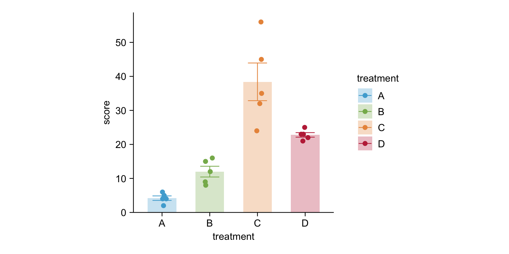

The goal of tidyplots is make to it ridiculously simple to create ready-to-use scientific plots by gradually adding and modifying plot components. It follows a similar logic as ggplot2, but uses the pipe %>% instead of +, which allows for more flexible and powerful workflows. Moreover, tidyplots is making the most common scientific plotting routines more accessible, by proving a clean and minimalist interface. Finally, it is fully compatible with ggplot code.
Installation
You can install the development version of tidyplots from GitHub with:
# install.packages("devtools")
devtools::install_github("jbengler/tidyplots")Example
This is a basic example which shows you how to solve a common problem:
library(tidyplots)
df_demo %>%
tidy_plot(x = category, y = value, color = category, fill = category) %>%
add_bar(alpha = 0.3) %>%
add_error() %>%
add_jitter()